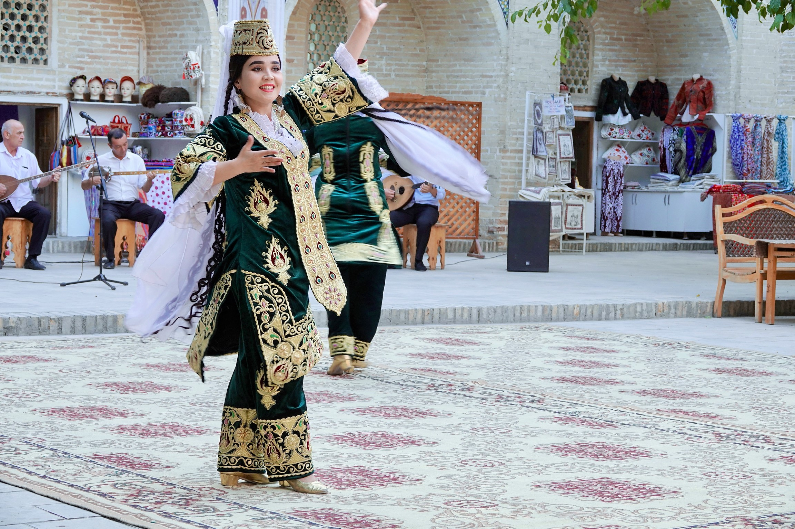
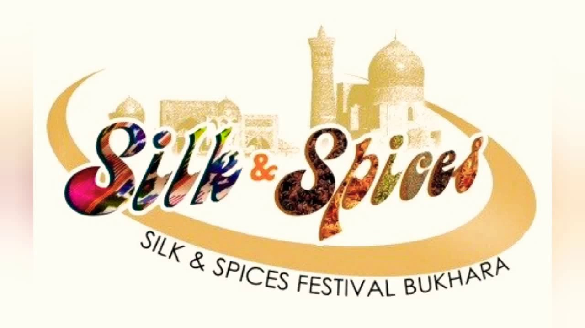
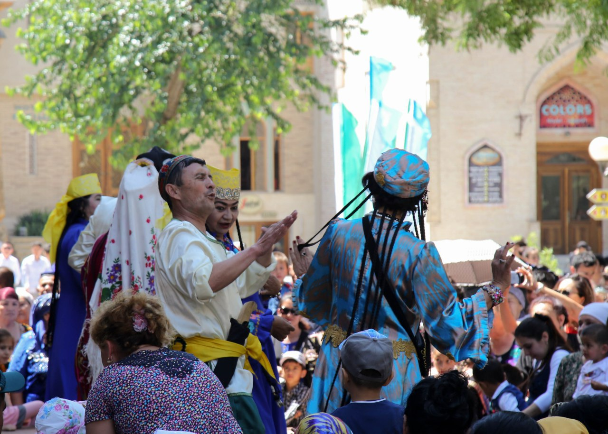
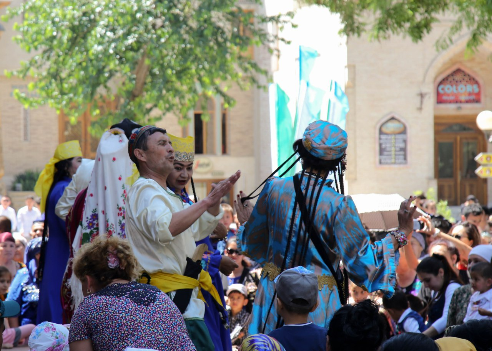

РУ/УЗ
MUKHAMMADJON
HOTEL
Вход
Бронировать
Фестиваль
"Шелк и Специи"
"Шелк и Специи"


Фестиваль «Шелк и Специи» - это
праздник, проводимый каждые два
года в Бухаре, городе на Великом
Шелковом пути.
В начале XXI века, благодаря усилиям
национальной компании «Узбектуризм», мэрии
Бухары, и Ассоциации ремесленников
«Хунарманд», был организован первый
фестиваль «Шелк и Специи», призванный
возродить культурное наследие Великого
Шелкового пути и показать все богатство
традиций местных мастеров. Идея оказалась
настолько хорошей, что фестиваль стал
ежегодным, и с каждым разом привлекал всё
больше туристов. По традиции, фестиваль
проходит несколько дней в конце мая –
начале июня.
На фестивале «Шелк и Специи» вы окажетесь в мире восточной сказки. На открытии обычно проходит праздничное шествие, где люди наряжаются в национальные костюмы, выступают артисты, танцоры, акробаты и силачи. Возле стен крепости Арк выстраиваются отряды средневековых воинов, а по улице, соединяющей торговые купола Бухары, проходят караваны из верблюдов и лошадей. Всё это создает впечатление о путешествии на тысячу лет назад.
На протяжении нескольких дней фестиваля «Шелк и Специи» проходят ярмарки, где можно купить изделия ручной работы, различные сувениры и, конечно же, шелковые платки. На территории исторических памятников организуются самые разные мастер-классы ремесленников Бухары и других регионов Узбекистана. На больших открытых площадках проводятся различные состязания, петушиные бои и другие игры. Вместе с этим, во время фестиваля проходят различные конференции, посвященные истории, культуре и сохранению традиций Узбекистана. 
На фестивале «Шелк и Специи» вы окажетесь в мире восточной сказки. На открытии обычно проходит праздничное шествие, где люди наряжаются в национальные костюмы, выступают артисты, танцоры, акробаты и силачи. Возле стен крепости Арк выстраиваются отряды средневековых воинов, а по улице, соединяющей торговые купола Бухары, проходят караваны из верблюдов и лошадей. Всё это создает впечатление о путешествии на тысячу лет назад.
На протяжении нескольких дней фестиваля «Шелк и Специи» проходят ярмарки, где можно купить изделия ручной работы, различные сувениры и, конечно же, шелковые платки. На территории исторических памятников организуются самые разные мастер-классы ремесленников Бухары и других регионов Узбекистана. На больших открытых площадках проводятся различные состязания, петушиные бои и другие игры. Вместе с этим, во время фестиваля проходят различные конференции, посвященные истории, культуре и сохранению традиций Узбекистана. 